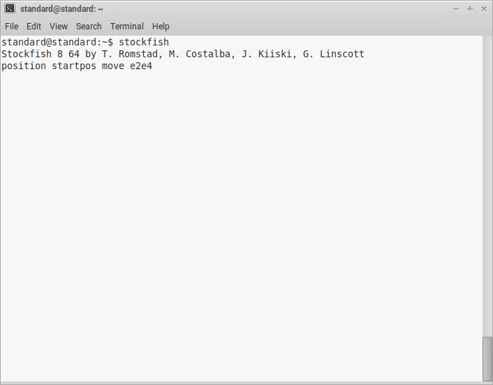
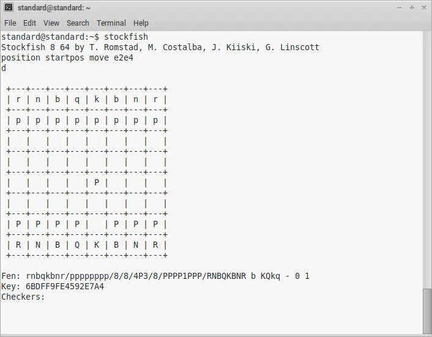
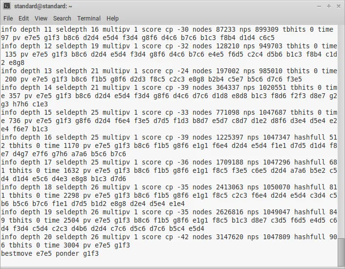
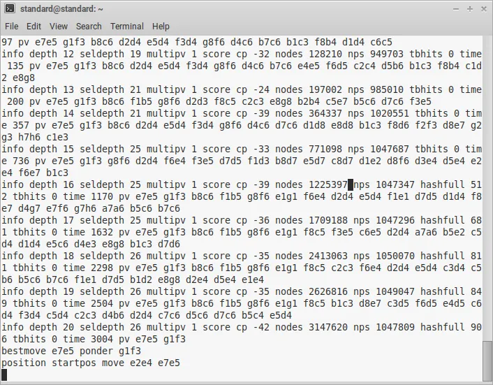
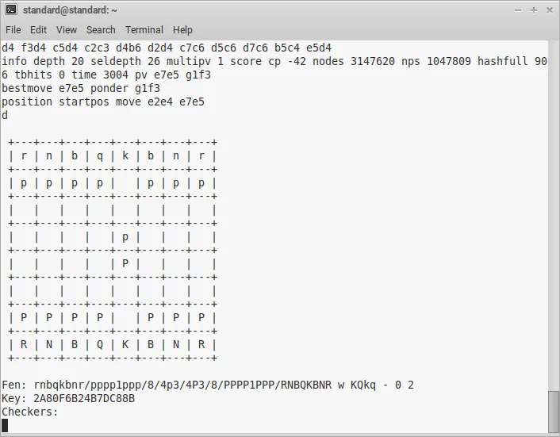
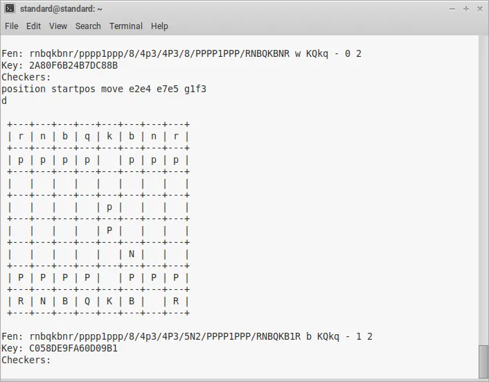

Jul 18, 2022 by Jordi Bassaganas
Playing Chess Against Stockfish in a Linux Terminal
Here's how the UCI protocol works
Photo by Alex Knight on UnsplashStockfish is a powerful, widely-used open-source chess engine. Its initial release dates back to 2008 and since then has become stronger and stronger to the point that today virtually no human can defeat it.
Some would argue this is just boring.
What's the point of playing against a program that's going to defeat you anyway? Stockfish surpasses by far the highest ELO ever recorded by a human, Magnus Carlsen, who holds a peak rating of 2882.
Considered one of the best chess engines out there, online chess sites like chess.com, chess24.com and lichess.org use it in one way or another. If you're an online chess player, probably you've used Stockfish unknowingly to analyze a position or play against a bot.
Besides being super strong, one of the reasons behind Stockfish's success is that it implements the Universal Chess Interface (UCI) protocol which means it can be connected to a graphical user interface (GUI) easily. The communication between the chess engine and the GUI is done via standard input and output with text commands.
UCI is a text-based protocol that humans can understand. If you want to play against Stockfish in the Linux terminal a good idea is to have a look at the UCI specification.
In today's post, I'm showing how easy it is to play against the most renowned chess engine of all time.
Install Stockfish on a Debian-Based Distro
Popular Debian-based Linux distros include Ubuntu, Linux Mint, MX Linux and Kali Linux among many others. While Linux isn't widely used in desktop environments it shines in the server market share.
This is a perfect time for you to try it out.
Stockfish is distributed under a GPLv3 license and is available for installation from the official repositories, just type this in a command-line prompt.
$ sudo apt-get install stockfish
Congrats!
Now you're ready to play against Stockfish in the terminal without a GUI.
Play Against Stockfish in the Linux Command Line
Open a terminal and type the following.
$ stockfish
Now make a move from the start position.
position startpos move e2e4
Well done!
But hang on a minute, it seems as though nothing has happened despite making a chess move even though the state of the board has changed indeed.
To get the information displayed you need to type d.
d
It is important to note that Stockfish uses long algebraic notation for moves. In long algebraic notation both the starting and ending squares are specified while the piece identifier is ignored.
The following command asks Stockfish to calculate the best response to e4 in 3 seconds.
go movetime 3000
The go command prints the best move e7e5 on
the console without changing the state of the board. Thus, if d
is typed again the output obtained will be the same one as before. You
need to manually type Stockfish's best move e7e5 as described
in the command below.
position startpos move e2e4 e7e5
Remember to type the d command to check out the state of
the board.
d
Now it is White to play, and the move Nf3 is made in long algebraic notation.
position startpos move e2e4 e7e5 g1f3
There are multiple different ways to combine commands and parameters, for example, moves can be made from a specific FEN position as opposed to the start position as in the examples above, but this is pretty much it.
I hope you enjoyed today's post and learned how to play against Stockfish in the command line.
Thank you so much for reading!